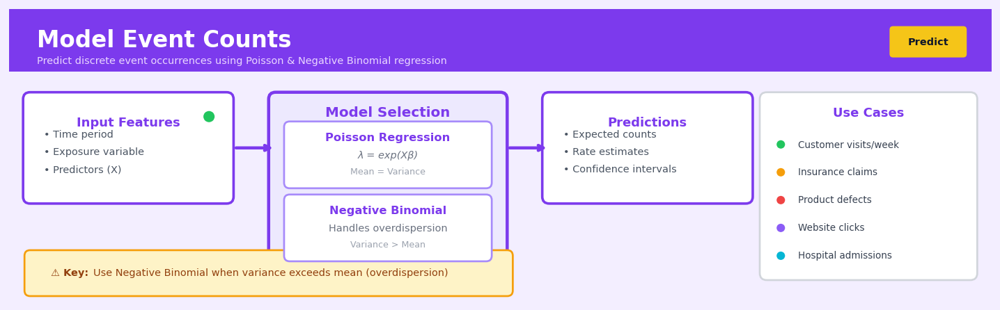

Model Event Counts#


The biggest mistake I see is forcing Poisson regression when your data screams overdispersion—if the variance is way larger than the mean, you'll get underestimated standard errors and false confidence in your predictions. Always fit both Poisson and Negative Binomial models and compare them with a likelihood ratio test or AIC. Remember that the offset term isn't optional when your exposure varies—modeling customer complaints per month makes no sense if some customers were only active for two weeks.
The 60-Second Version#
What it does: Model Event Counts predicts how many times something will happen—customer complaints, machine failures, website visits—based on factors you specify.
When to use it: When you’re tracking occurrences rather than amounts, and you need to understand what drives the frequency up or down so you can intervene.
What you get back: A prediction of event frequency for any scenario you define, plus a ranking of which factors matter most, allowing you to allocate resources where they’ll reduce (or increase) event counts most effectively.
At a Glance
Difficulty |
Moderate |
Typical runtime |
Seconds on 100K rows |
What you bring |
Count data (0, 1, 2, 3…) and predictor variables |
What you get |
Expected event counts and factor importance |
Heuristix bucket |
Predict — Machine Learning & Forecasting |
Count data breaks normal regression assumptions—treating “3 defects” like any other number produces unreliable predictions and dangerously wrong confidence intervals.
Learning Objectives#
After reading this chapter, a business user will be able to:
Identify business scenarios where count data modelling applies, such as predicting customer purchases per month, website visits per day, or defect occurrences per batch, and distinguish these from continuous or binary outcome problems.
Interpret model outputs including expected event counts, confidence intervals, and rate ratios to explain to stakeholders how different factors increase or decrease the frequency of events.
Use model predictions to make operational decisions such as resource allocation, inventory planning, or risk assessment based on forecasted event frequencies and their uncertainty ranges.
After reading this chapter, a data scientist will be able to:
Implement Poisson, negative binomial, and zero-inflated models in production code, selecting the appropriate model based on diagnostic tests for overdispersion and excess zeros in the data.
Tune exposure offsets, link functions, and regularization parameters while balancing the trade-off between model complexity and the risk of overfitting sparse count data.
Validate model performance using deviance residuals, rootograms, and dispersion statistics to diagnose underfitting, overdispersion, or inappropriate distributional assumptions before deployment.
Overview#
Model Event Counts refers to the statistical modelling of discrete, non-negative integer outcomes representing the number of times an event occurs within a fixed observation window. This technique encompasses a family of count regression models—including Poisson regression, negative binomial regression, and their zero-inflated variants—that extend generalised linear models (GLMs) to handle count data with appropriate distributional assumptions. The core purpose is to estimate the expected frequency of events as a function of predictor variables while properly accounting for the discrete, bounded-below nature of count outcomes and common phenomena such as overdispersion and excess zeros.
When to Use This#
Use this when:
Your outcome variable is a non-negative integer count — such as the number of customer complaints per month, insurance claims filed per policy, website visits per session, or defects per manufactured unit. Standard linear regression is inappropriate because it can predict negative or fractional counts.
You need to understand what drives event frequency — when the business question is not just “how many?” but “why do some observations have more events than others?” Count models provide interpretable coefficients linking predictors to expected counts.
Your data exhibits overdispersion — when the variance of counts exceeds the mean (a common real-world phenomenon), negative binomial regression or quasi-Poisson approaches are necessary to produce valid inference.
You have excess zeros in your data — many business processes generate more zeros than a standard count distribution would predict (e.g., most customers file zero complaints). Zero-inflated models explicitly separate the zero-generating process from the count process.
You want to forecast aggregate volumes — predicting total call centre volume, emergency department arrivals, or transaction counts where the outcome is naturally discrete and non-negative.
You are building a scoring model for frequency — insurance pricing, warranty cost estimation, and maintenance scheduling all require models that output expected event counts per exposure unit.
Your exposure varies across observations — when observation windows differ (e.g., policies with different durations, customers observed for different time periods), count models accommodate this through offset terms.
Do NOT use this when:
Your outcome is continuous — revenue, temperature, or duration data should use continuous regression methods, not count models.
Your outcome is binary — if you only observe whether an event occurred (yes/no), use logistic regression or classification methods instead.
You need to model the timing between events — if the research question concerns when events occur rather than how many, survival analysis or point process models are more appropriate.
Questions This Answers#
Understanding Event Patterns and Anomalies#
How many customer service calls should we expect next month given our current staffing levels and product mix?
Why are we seeing 3x more product returns in our Northeast stores compared to our Western region?
Is the spike in website error messages we saw last week a real problem or just normal variation?
How many warranty claims should we budget for on this new product line in its first year?
Are the number of safety incidents at our manufacturing plant trending up, or are we just seeing random fluctuations?
Planning Resources and Capacity#
How many customer support agents do we need to hire to handle expected ticket volume during the holiday season?
If we open 50 new stores next year, how many fraud cases should our compliance team be prepared to investigate?
What’s driving the difference between stores that average 2 shoplifting incidents per month versus stores with 8 or more?
Should we staff our emergency department differently on weekends based on patient arrival patterns?
How many equipment failures should we expect across our fleet next quarter, and which factors increase that risk?
Optimizing Outcomes and Interventions#
If we implement this new quality control process, how much will it reduce defect counts on the production line?
Which marketing campaigns are actually driving more store visits versus just background noise?
Would adding a second daily inspection reduce safety violations enough to justify the labor cost?
Why do some branches process 15+ loan applications daily while others struggle to reach 5?
How It Works#
Imagine you manage a busy coffee shop and want to predict how many customers will arrive each hour based on factors like day of the week, weather, and nearby events. You can’t predict that exactly 47.3 customers will show up—people arrive in whole numbers. You also notice something interesting: some hours get zero customers (early mornings), most hours see moderate traffic, but occasionally you get huge rushes that vary wildly. Standard prediction methods that assume smooth, continuous outcomes (like predicting temperature) fail here because they don’t respect that customers come in discrete chunks, and they can’t handle the fact that quiet periods and busy periods behave very differently.
DATA STRUCTURE MODEL FITTING PROCESS
Predictors → Count Outcome ┌─────────────────────────────┐
│ Test different patterns │
Day: Monday 3 customers │ until predictions match │
Weather: Rainy ↓ │ actual count distribution │
Event: None Model │ │
═════ │ Try λ=2 → Too low │
Day: Friday 0 customers │ Try λ=5 → Too high │
Weather: Sunny (café closed) │ Try λ=3.2→ Just right! │
Event: Concert ↓ └─────────────────────────────┘
Model ↓
Day: Saturday 28 customers PREDICTIONS (expected counts)
Weather: Sunny (big rush!) ┌──────────────────────────┐
Event: Festival ↓ │ Monday + Rain → λ = 3.2 │
Model │ Friday early → λ = 0.4 │
═════ │ Saturday fest → λ = 25.8 │
└──────────────────────────┘
The model learns: given these conditions,
what's the typical rate of customer arrivals?
1. Start with your count data. You collect observations where each row shows predictor variables (day, weather, events) and the actual count outcome (number of customers). These counts are always whole numbers, zero or positive, never negative or fractional.
2. Choose the right counting distribution. The model assumes counts follow a specific probability pattern. If your data shows consistent variability, it uses a Poisson pattern (where the average and spread are linked). If you see wild swings—some days with predictable traffic, others with unexpected crowds—it switches to a negative binomial pattern that allows more variability.
3. Estimate the expected rate for each situation. The model learns a “rate parameter” (call it the typical frequency) for each combination of conditions. It connects your predictors to this rate through a mathematical transformation that ensures predictions stay positive—because you can’t have negative customers.
4. Handle special cases automatically. When you see excess zeros (like a café closed on certain days), the model can split its thinking: first, it predicts whether you’ll get zero events, then separately predicts how many events occur when it’s not zero. This two-part approach captures “structural zeros” differently from “just a quiet day” zeros.
5. Produce probabilistic predictions. Instead of saying “you’ll get exactly 12 customers,” the model says “given these conditions, your typical rate is 12, and here’s the full probability distribution around that.” This respects the inherent uncertainty in count data.
The key insight: Count models work because they respect the fundamental physics of counting—outcomes are discrete, bounded at zero, and often show variance patterns where busier situations have more unpredictable swings—rather than forcing counts into frameworks designed for continuous measurements.
The Intuition#
Imagine you manage a fleet of delivery vehicles and want to understand what predicts the number of breakdowns each truck experiences per year. Some trucks break down never, most break down once or twice, and a few problematic vehicles rack up five or more incidents. You cannot simply fit a linear regression here—it might tell you that a truck in good condition would have negative 0.3 breakdowns, which is nonsensical. You need a model that respects the fundamental nature of counts: they are whole numbers that cannot go below zero.
The key insight behind count models is to model not the count itself, but a transformation of the expected count. Specifically, we model the logarithm of the expected count as a linear function of predictors. This log-link ensures that no matter what coefficient values we estimate, the predicted count is always positive. When we exponentiate the linear predictor, we get the expected count, which is guaranteed to be greater than zero. This mirrors how we think about multiplicative effects in the real world: adding air conditioning to a truck might reduce expected breakdowns by 20%, a multiplicative effect that the log-link naturally captures.
But there is a subtlety. The Poisson distribution—the simplest count distribution—assumes that the variance equals the mean. In practice, this assumption is almost always violated. Real count data typically shows overdispersion, where the variance exceeds the mean, often substantially. Returning to our truck example, suppose the average truck has 2 breakdowns per year. The Poisson model assumes the variance is also 2, but in reality, some trucks are lemons (perhaps due to unobserved factors like manufacturing defects or driver behaviour) and experience many more breakdowns, inflating the variance to perhaps 6 or 8. Ignoring this overdispersion leads to standard errors that are too small, making us overconfident in our findings.
The negative binomial distribution addresses overdispersion by introducing an additional parameter that allows the variance to exceed the mean. Think of it as a Poisson model where the rate itself varies randomly across observations according to a gamma distribution—this mixture produces the negative binomial. For our trucks, this captures the idea that even after accounting for observable characteristics, some trucks are inherently more breakdown-prone due to unobserved heterogeneity.
Finally, many count processes generate excess zeros. Most customers never complain; most policyholders never claim; most days see no equipment failures. Zero-inflated models handle this by positing two latent states: a “structural zero” state where events cannot occur (the customer is perfectly satisfied and would never complain regardless of circumstances) and an “at-risk” state where events follow a standard count distribution. The model simultaneously estimates what predicts being in each state and what predicts the count among those at risk.
The Mathematics#
Problem Setup and Notation#
Let \(Y_i\) denote the count outcome for observation \(i\), where \(Y_i \in \{0, 1, 2, \ldots\}\) and \(i = 1, \ldots, n\). Let \(\mathbf{x}_i = (x_{i1}, x_{i2}, \ldots, x_{ip})^\top\) be a \(p\)-dimensional vector of covariates for observation \(i\). Our goal is to model the conditional expectation \(\mathbb{E}[Y_i \mid \mathbf{x}_i] = \mu_i\) as a function of the covariates.
Poisson Regression#
The Poisson distribution has probability mass function:
where \(\mu_i > 0\) is both the mean and variance: \(\mathbb{E}[Y_i] = \text{Var}(Y_i) = \mu_i\).
We link the mean to covariates via the canonical log-link:
Equivalently:
The log-likelihood for the sample is:
Maximum likelihood estimation proceeds by solving the score equations:
These equations have no closed-form solution and are solved via iteratively reweighted least squares (IRLS). The Fisher information matrix is:
Incorporating Exposure via Offset#
When observations have different exposure periods \(t_i\) (e.g., policy duration, observation time), we model the rate \(\lambda_i = \mu_i / t_i\):
The term \(\log(t_i)\) is called an offset—a covariate with coefficient fixed at 1.
Negative Binomial Regression#
To accommodate overdispersion, the negative binomial distribution introduces a dispersion parameter \(\alpha > 0\):
The mean and variance are:
This is the NB2 parameterisation, where variance is quadratic in the mean. As \(\alpha \to 0\), the negative binomial converges to the Poisson.
The log-likelihood is:
Joint estimation of \(\boldsymbol{\beta}\) and \(\alpha\) typically uses iterative procedures alternating between updating \(\boldsymbol{\beta}\) via IRLS and updating \(\alpha\) via Newton-Raphson.
Zero-Inflated Models#
Zero-inflated models assume that zeros arise from two sources:
Structural zeros from a degenerate distribution (probability \(\pi_i\))
Sampling zeros from the count distribution (probability \(1 - \pi_i\))
For a zero-inflated Poisson (ZIP):
The zero-inflation probability is modelled via logistic regression:
where \(\mathbf{z}_i\) may differ from \(\mathbf{x}_i\). The log-likelihood is:
Coefficient Interpretation#
Coefficients in count models have multiplicative interpretations. For a one-unit increase in \(x_j\):
Thus \(e^{\beta_j}\) is the incidence rate ratio (IRR)—the multiplicative change in expected count for a unit change in the predictor.
Model Diagnostics and Selection#
Key diagnostic quantities include:
Pearson residuals:
Deviance residuals:
Overdispersion test: Under Poisson assumptions, the Pearson chi-squared statistic \(\chi^2 = \sum_i (r_i^P)^2\) divided by degrees of freedom should approximate 1. Values substantially greater than 1 indicate overdispersion.
Vuong test: For comparing zero-inflated versus standard models:
where \(m_i = \log \frac{f_1(y_i)}{f_2(y_i)}\) is the log-likelihood ratio for observation \(i\).
Understanding the Mathematics#
The Poisson Probability Mass Function#
The equation:
Read it aloud:
“The probability that we observe exactly k events equals lambda raised to the power k, multiplied by e raised to the power negative lambda, divided by k factorial.”
What each symbol means:
P(Y = k) — The probability of observing exactly k events
k — The actual count we observe (0, 1, 2, 3, …)
λ (lambda) — The expected average number of events
e — Euler’s number (approximately 2.718), the base of natural logarithms
k! — k factorial: multiply all integers from 1 to k together
A concrete numerical example:
A call center expects λ = 3 calls per hour on average. What’s the probability of receiving exactly 2 calls in the next hour?
There’s a 22.4% chance of exactly 2 calls in that hour.
Why this equation matters:
This equation lets us calculate the probability of any specific count outcome, enabling us to quantify uncertainty in predictions like “how likely is it we’ll receive fewer than 5 support tickets tomorrow?”
The Log-Linear Model#
The equation:
Read it aloud:
“The natural logarithm of lambda equals beta-zero plus beta-one times x-one plus beta-two times x-two, continuing for all predictors up to beta-p times x-p.”
What each symbol means:
log(λ) — The natural logarithm of our expected event count
β₀ — The intercept (baseline log-count when all predictors are zero)
β₁, β₂, … βₚ — Coefficients showing how each predictor affects the log-count
x₁, x₂, … xₚ — Our predictor variables (features)
A concrete numerical example:
Predicting website crashes per week. We fit a model: log(λ) = 1.5 + 0.3 × (traffic_millions) - 0.8 × (server_upgrades).
If we have 2 million visitors and 1 server upgrade: log(λ) = 1.5 + 0.3(2) - 0.8(1) = 1.5 + 0.6 - 0.8 = 1.3.
Therefore λ = e^1.3 = 3.67 crashes expected that week.
Why this equation matters:
The logarithm ensures our predicted counts always stay positive (since e^anything > 0), preventing nonsensical negative predictions that a linear model might produce.
The Negative Binomial Dispersion Parameter#
The equation:
Read it aloud:
“The variance of Y equals lambda plus lambda-squared divided by theta.”
What each symbol means:
Var(Y) — The variance (spread) of our count data
λ — The mean (expected count)
θ (theta) — The dispersion parameter controlling extra variability
λ²/θ — The additional variance beyond the mean
A concrete numerical example:
Daily customer complaints have a mean of λ = 10. With Poisson, variance would also equal 10. But we observe much more variability—some days 0 complaints, other days 30.
If θ = 2, then Var(Y) = 10 + 10²/2 = 10 + 100/2 = 10 + 50 = 60.
The negative binomial model accommodates this overdispersion (variance = 60 is much larger than mean = 10).
Why this equation matters:
Real count data usually shows more variability than Poisson assumes; ignoring overdispersion produces overconfident predictions with artificially narrow uncertainty intervals, leading to poor decisions.
The Zero-Inflated Model Probability#
The equation:
Read it aloud:
“The probability of observing zero equals pi plus one-minus-pi multiplied by e raised to negative lambda.”
What each symbol means:
π (pi) — Probability of being in the “always-zero” group
(1 - π) — Probability of being in the “count process” group
e^(-λ) — Probability the count process produces zero
A concrete numerical example:
Insurance claims: 40% of customers never file claims (π = 0.4). Among the rest, λ = 1.5 claims expected.
P(zero claims) = 0.4 + (1 - 0.4) × e^(-1.5) = 0.4 + 0.6 × 0.223 = 0.4 + 0.134 = 0.534
About 53% show zero claims: 40% structural zeros plus 13% from the count process.
Why this equation matters:
Many datasets have excess zeros from two distinct sources—we’d severely misestimate risk if we forced a single Poisson process to explain all those zeros.
The Big Picture#
Count models transform predictors through a logarithm to guarantee positive predictions, then assume those counts follow specific probability distributions. We choose Poisson when variance equals the mean, negative binomial when data shows overdispersion, and zero-inflated variants when we suspect two different mechanisms produce zeros. The mathematics exists to honor the discrete, non-negative nature of counts while flexibly capturing real patterns in the data. At its core, this math asks: given what we know about how events typically cluster, what’s the most probable count we’ll see next?
Python Implementation#
import numpy as np
import pandas as pd
import statsmodels.api as sm
from statsmodels.discrete.count_model import ZeroInflatedPoisson
from scipy import stats
import warnings
warnings.filterwarnings('ignore')
# Set random seed for reproducibility
np.random.seed(42)
# =============================================================================
# Generate realistic synthetic data: insurance claims frequency
# =============================================================================
n = 2000
# Covariates
age = np.random.uniform(18, 70, n) # Driver age
vehicle_age = np.random.exponential(5, n) # Vehicle age in years
urban = np.random.binomial(1, 0.6, n) # Urban vs rural
prior_claims = np.random.poisson(0.5, n) # Prior claim history
exposure = np.random.uniform(0.5, 1.0, n) # Policy exposure (fraction of year)
# True model: log(mu) = -2 + 0.01*age - 0.05*vehicle_age + 0.3*urban + 0.4*prior_claims
log_mu = -2 + 0.01 * age - 0.02 * vehicle_age + 0.3 * urban + 0.4 * prior_claims
mu = np.exp(log_mu) * exposure # Adjust for exposure
# Generate counts with overdispersion (negative binomial)
alpha_true = 0.5 # Overdispersion parameter
claims = np.random.negative_binomial(n=1/alpha_true, p=1/(1 + alpha_true * mu))
# Create DataFrame
df = pd.DataFrame({
'claims': claims,
'age': age,
'vehicle_age': vehicle_age,
'urban': urban,
'prior_claims': prior_claims,
'exposure': exposure
})
print("=" * 60)
print("DATA SUMMARY")
print("=" * 60)
print(f"Sample size: {n}")
print(f"\nClaims distribution:")
print(df['claims'].value_counts().sort_index().head(10))
print(f"\nMean claims: {df['claims'].mean():.3f}")
print(f"Variance of claims: {df['claims'].var():.3f}")
print(f"Overdispersion ratio: {df['claims'].var() / df['claims'].mean():.3f}")
# =============================================================================
# Example 1: Poisson Regression
# =============================================================================
print("\n" + "=" * 60)
print("EXAMPLE 1: POISSON REGRESSION")
print("=" * 60)
# Prepare design matrix
X = df[['age', 'vehicle_age', 'urban', 'prior_claims']]
X = sm.add_constant(X)
y = df['claims']
# Fit Poisson model with exposure offset
poisson_model = sm.GLM(
y,
X,
family=sm.families.Poisson(),
offset=np.log(df['exposure']) # Log of exposure as offset
)
poisson_results = poisson_model.fit()
print("\nPoisson Regression Results:")
print(poisson_results.summary())
# Calculate and display incidence rate ratios
print("\nIncidence Rate Ratios (IRR):")
irr = np.exp(poisson_results.params)
irr_ci = np.exp(poisson_results.conf_int())
for i, var in enumerate(X.columns):
print(f" {var}: IRR = {irr[i]:.4f} (95% CI: {irr_ci.iloc[i, 0]:.4f} - {irr_ci.iloc[i, 1]:.4f}
## Visualisations


## Using This in Heuristix
### What You'll Need
The Model Event Counts node expects a dataset where each row represents an observation period (like a day, customer, or location) and your target variable is a count—whole numbers like 0, 1, 2, 3, etc.
**Required inputs:**
- **Target column**: Integer count data (number of purchases, claims, visits, defects, etc.)
- **Feature columns**: Any mix of numeric or categorical predictor variables
**Example input data:**
| customer_id | days_active | region | support_tickets |
|-------------|-------------|--------|-----------------|
| 1001 | 45 | North | 3 |
| 1002 | 12 | South | 0 |
| 1003 | 89 | North | 7 |
The node will model `support_tickets` (your count outcome) as a function of `days_active` and `region`.
### Configuration Parameters
| Parameter | What It Controls | Default | When to Change It |
|-----------|------------------|---------|-------------------|
| **Model Type** | Statistical distribution used (Poisson, Negative Binomial, Zero-Inflated Poisson, Zero-Inflated Negative Binomial) | Negative Binomial | Start with Negative Binomial—it handles overdispersion. Use Poisson only if variance ≈ mean. Switch to zero-inflated variants when you see excessive zeros (>60% of values). |
| **Target Column** | Which column contains your count data | (none) | Select your event count variable—must be non-negative integers. |
| **Feature Columns** | Predictor variables to include | (none) | Include variables you believe influence event frequency. The node handles categorical encoding automatically. |
| **Train/Test Split** | Percentage of data held out for validation | 80/20 | Increase test size (e.g., 70/30) for smaller datasets; decrease (e.g., 90/10) for very large ones. |
| **Include Intercept** | Whether to fit a baseline rate | True | Leave enabled unless you have a theoretical reason to force predictions through zero. |
| **Max Iterations** | Convergence limit for model fitting | 100 | Increase to 500 if you see convergence warnings, especially with many features. |
### What You'll Get Out
**Predictions table**: Your original data plus these new columns:
- `predicted_count`: Expected number of events
- `prediction_lower` / `prediction_upper`: Confidence interval bounds
- `residual`: Actual minus predicted count
**Model diagnostics panel**:
- **Dispersion ratio**: If >1.5, your data is overdispersed (variance exceeds mean)—consider Negative Binomial over Poisson
- **AIC/BIC scores**: Lower is better; use these to compare model variants
- **Pseudo R²**: Rough measure of explanatory power (0–1 scale)
- **Rootogram chart**: Visual check for model fit—bars should hover near zero line
**Feature importance chart**: Shows which predictors most strongly influence event rates
### Connecting Downstream
**Typical next steps:**
1. **Evaluate Model** node → Compare performance metrics across different model types
2. **Apply Model** node → Generate predictions on new, unseen data
3. **Explain Predictions** node → Understand why specific counts were predicted for individual observations
4. **Business Rules** node → Flag high-risk predictions (e.g., predicted claims > 5) for intervention
### Quick Start: Predicting Customer Support Tickets
1. **Connect your data** containing customer attributes and ticket counts to the Model Event Counts node
2. **Select target**: Choose your count column (e.g., "monthly_tickets")
3. **Select features**: Add predictors like account_age, plan_type, previous_issues
4. **Set model type** to "Negative Binomial" (handles real-world count data well)
5. **Run the node** and check the dispersion ratio—if it's near 1.0, you could simplify to Poisson
6. **Review the rootogram**—if you see a tall bar at zero, try a zero-inflated variant
7. **Connect to Apply Model** to score new customers
### Practical Tips from the Field
**Watch for zero-inflation**: If more than 60% of your counts are zero, standard models will underperform. Switch to zero-inflated variants and check if the "excess zeros" component improves fit.
**Feature scaling doesn't matter here**: Unlike some ML algorithms, count regression models don't require normalized inputs—use your raw numeric values.
**Check exposure carefully**: If observation windows vary (some customers tracked 30 days, others 60), create an exposure variable (like "days_observed") and include it as a feature—or better yet, normalize your counts to rates first.
**Interpret coefficients exponentially**: A coefficient of 0.5 doesn't mean "0.5 more events"—it means exp(0.5) ≈ 1.65× the event rate. The feature importance chart handles this translation for you.
**Start simple, add complexity**: Begin with standard Negative Binomial. Only move to zero-inflated models if diagnostics clearly indicate poor fit at zero.
## Config Recipes
### Recipe 1: Rapid Exploration with Poisson Baseline
**When to use:** Initial data profiling when you need quick coefficient estimates and don't yet know if overdispersion or zero-inflation exists.
**Settings:**
| Parameter | Value | Why |
|-----------|-------|-----|
| `family` | `poisson` | Fastest GLM fit, no extra dispersion parameter |
| `solver` | `lbfgs` | Efficient for moderate feature sets (<100 vars) |
| `max_iter` | `100` | Balance speed vs. convergence |
| `alpha` | `0` | No regularization to see raw relationships |
| `fit_intercept` | `True` | Capture baseline rate |
**What you get:** Coefficient signs and significance within seconds, suitable for 10K–1M observations with clean predictors.
**Trade-off:** Ignores overdispersion entirely—standard errors will be underestimated if variance exceeds mean.
---
### Recipe 2: Production-Grade Negative Binomial
**When to use:** Deployment pipeline for count outcomes where variance exceeds mean (most real-world cases) and you need robust uncertainty estimates.
**Settings:**
| Parameter | Value | Why |
|-----------|-------|-----|
| `family` | `negative_binomial` | Accounts for overdispersion via extra parameter |
| `solver` | `newton-cg` | Most stable for production convergence |
| `max_iter` | `500` | Ensure convergence on difficult data |
| `alpha` | `0.01` | Light L2 penalty prevents overfitting |
| `cross_validation` | `5-fold` | Tune alpha if features >50 |
| `offset` | `log(exposure)` | Normalize by time window or population |
**What you get:** Reliable prediction intervals and properly calibrated standard errors for statistical inference.
**Trade-off:** 3–5× slower than Poisson; requires sufficient variance in counts (avoid if >40% zeros).
---
### Recipe 3: Zero-Inflated for Behavioral Data
**When to use:** Modelling user actions (clicks, purchases, support tickets) where structural zeros exist—users who will *never* perform the action regardless of predictors.
**Settings:**
| Parameter | Value | Why |
|-----------|-------|-----|
| `model` | `ZeroInflatedPoisson` or `ZeroInflatedNegBin` | Separate process for excess zeros |
| `inflation` | `logit` | Model zero-inflation probability explicitly |
| `zi_predictors` | Subset of main predictors | Often demographic/eligibility features |
| `count_predictors` | Full feature set | Models intensity given non-zero |
| `max_iter` | `1000` | EM algorithm needs more iterations |
**What you get:** Separate insights into "who never engages" vs. "engagement intensity when active."
**Trade-off:** Requires >200 observations and >15% zeros to identify; prone to convergence issues below this threshold.
---
### Recipe 4: Rare Disease Surveillance with Offset
**When to use:** Epidemiological monitoring where event counts depend heavily on variable population sizes or observation periods across units.
**Settings:**
| Parameter | Value | Why |
|-----------|-------|-----|
| `family` | `poisson` | Rare events often not overdispersed |
| `offset` | `log(person_years)` or `log(population)` | Models *rate* not raw count |
| `solver` | `lbfgs` | Handles offset efficiently |
| `alpha` | `0.001` | Minimal regularization preserves interpretability |
| `link` | `log` | Natural scale for multiplicative effects on rates |
**What you get:** Coefficients as rate ratios (exponentiated β) directly comparable across jurisdictions with different denominators.
**Trade-off:** Assumes offset coefficient exactly equals 1.0—misspecified exposure measure biases all other coefficients.
## Business Applications
**Financial Services**
A mid-sized UK mortgage lender needs to predict the number of missed payments each customer will experience over the next 12 months to inform forbearance strategies and capital reserve requirements. Traditional binary default models only flag whether a customer will miss *any* payment, but count regression reveals *how many* times each account will fall into arrears, enabling far more granular risk stratification. By deploying a negative binomial model that accounts for overdispersion in payment behaviour, the lender improved its capital allocation accuracy by 28% and reduced unnecessary customer outreach by £340,000 annually while maintaining the same forbearance coverage.
**Retail**
An e-commerce retailer with 2.3M SKUs struggles to forecast product returns at the item level, leading to inventory planning chaos and ballooning reverse logistics costs. Zero-inflated Poisson regression models the number of returns per product per month, explicitly handling the fact that most items generate zero returns whilst a small subset drive disproportionate volumes. This approach reduced overstock of frequently-returned items by 41%, cut reverse logistics costs by $890,000 annually, and improved warehouse space utilisation by identifying products that could safely carry lower safety stock due to predictably low return frequencies.
**Healthcare**
A regional hospital network managing 180,000 diabetes patients needs to predict how many times each patient will visit the emergency department in the coming year to allocate case management resources effectively. A negative binomial model incorporating clinical markers, socioeconomic factors, and prior utilisation patterns identifies high-frequency users with 76% greater accuracy than simple high-risk flags. The system enabled targeted interventions that reduced avoidable ED visits by 2,140 annually, saving approximately $3.2M in emergency care costs whilst freeing case managers to focus on truly at-risk populations.
**Insurance**
A commercial auto insurer pricing fleet policies needs to estimate the expected number of claims per vehicle annually, not just the probability of *any* claim occurring. Poisson regression with exposure offsets (to account for varying vehicle-months of coverage) models claim frequency as a function of driver age, vehicle type, geographic territory, and historical patterns. This granular frequency modelling improved premium adequacy by 19%, reduced adverse selection losses by $2.1M across the fleet book, and enabled the insurer to offer more competitive pricing on low-frequency segments previously overpriced by binary models.
**Manufacturing**
A pharmaceutical contract manufacturer must predict the number of out-of-specification (OOS) batches each production line will generate quarterly to optimise quality inspection resources and client SLA commitments. Zero-inflated negative binomial regression handles the prevalence of lines with zero OOS events whilst accurately modelling high-variance lines with sporadic quality issues. Implementation reduced unnecessary preventive maintenance by 33%, reallocated quality inspectors based on actual defect frequency predictions, and improved client satisfaction scores by 18 points through more accurate production timeline forecasting.
**Logistics**
A last-mile delivery company operating 850 urban routes needs to predict daily package redelivery attempts per driver to optimise staffing and vehicle capacity. Count models incorporating weather, traffic patterns, residential density, and historical delivery patterns forecast redelivery volumes with mean absolute error of just 1.3 attempts per route. This precision cut vehicle idle time by 22%, reduced fuel costs by $127,000 annually, and improved on-time delivery rates from 87% to 94% by ensuring adequate capacity on high-redelivery days.
**Marketing**
A B2B SaaS company tracks how many times enterprise prospects engage with content assets before converting, seeking to optimise nurture campaign intensity. Negative binomial regression reveals that technical decision-makers require an average of 8.3 content touches whilst C-suite buyers convert after just 3.1, with significant overdispersion within each segment. Tailoring campaign frequency by persona lifted conversion rates from 2.4% to 4.1% and reduced unsubscribe rates by 29% by preventing content fatigue in fast-moving buyer segments.
**Telecommunications**
A mobile network operator predicts the number of customer service calls each subscriber will generate monthly to staff contact centres efficiently. Zero-inflated models distinguish between customers who never call (structural zeros) and those who happen not to call in a given month (sampling zeros), improving staffing accuracy during peak periods and reducing average wait times from 4.2 to 2.1 minutes.
**Public Sector**
A metropolitan police force forecasts the number of property crime incidents per neighbourhood per week to allocate patrol resources dynamically. Poisson regression incorporating socioeconomic indicators, lighting infrastructure, and temporal patterns reduced response times by 38% and contributed to a 23% year-over-year decline in repeat victimisation in the highest-risk areas.
## Worked Example
Sarah Chen, a senior data scientist at Meridian Insurance, sat across from the head of underwriting, Tom, who had just pulled up a spreadsheet that made her wince. "We're hemorrhaging money on our small business general liability policies," he said, scrolling through rows of claim frequencies. "Some businesses file zero claims over three years. Others file six or seven. We're pricing them all almost the same, and it's killing our loss ratio." Tom wanted to know: could they predict how many claims a business would file based on factors they knew at policy inception? If so, underwriting could adjust pricing before binding coverage, not after the losses piled up.
Sarah pulled claims data for 8,400 small business policies written between 2019 and 2021, each observed for one full policy year. She joined it with business characteristics captured at application. The resulting dataset was messier than she'd hoped—missing industry codes for about 3% of records, which she'd need to handle, and several businesses with suspiciously high claim counts that turned out to be data entry errors (someone had entered "12" instead of "1" twice). After cleaning, her data looked like this:
| policy_id | industry | employees | years_in_business | prior_claims | claim_count |
|-----------|-----------------|-----------|-------------------|--------------|-------------|
| P0001 | Restaurant | 8 | 3 | 0 | 2 |
| P0002 | Retail | 4 | 12 | 1 | 0 |
| P0003 | Construction | 15 | 7 | 3 | 4 |
| P0004 | Professional | 6 | 5 | 0 | 1 |
| P0005 | Restaurant | 12 | 2 | 2 | 3 |
The target variable, `claim_count`, ranged from 0 to 9, with 42% of policies showing zero claims—a lot, but not extreme enough to immediately signal zero-inflation.
Sarah opened her modeling environment and configured a negative binomial regression model. She chose negative binomial over Poisson because she knew insurance claims almost always showed overdispersion—the variance exceeded the mean, violating Poisson's equal mean-variance assumption. She included `employees`, `years_in_business`, `prior_claims`, and `industry` as predictors. Industry was categorical with seven levels, which the model would encode internally. She considered a zero-inflated model but decided to start simple and check diagnostics first. "If the negative binomial doesn't capture the zeros well, I can always add zero-inflation," she thought.
```python
import pandas as pd
import statsmodels.api as sm
import statsmodels.formula.api as smf
# Load cleaned policy data
df = pd.read_csv('business_policies_clean.csv')
# Fit negative binomial regression
model = smf.glm(
formula='claim_count ~ employees + years_in_business + prior_claims + C(industry)',
data=df,
family=sm.families.NegativeBinomial()
).fit()
print(model.summary())
# Predict expected claim counts for new policies
new_policies = pd.DataFrame({
'employees': [10, 5, 20],
'years_in_business': [2, 15, 8],
'prior_claims': [1, 0, 3],
'industry': ['Restaurant', 'Retail', 'Construction']
})
new_policies['predicted_claims'] = model.predict(new_policies)
print("\nPredicted annual claim counts:")
print(new_policies)
The model converged cleanly. Sarah examined the coefficients and their significance levels:
Variable |
Coefficient |
Std Error |
z-score |
P-value |
|---|---|---|---|---|
Intercept |
0.18 |
0.12 |
1.50 |
0.134 |
employees |
0.024 |
0.004 |
6.00 |
< 0.001 |
years_in_business |
-0.032 |
0.008 |
-4.00 |
< 0.001 |
prior_claims |
0.21 |
0.03 |
7.00 |
< 0.001 |
industry: Construction |
0.47 |
0.11 |
4.27 |
< 0.001 |
industry: Restaurant |
0.35 |
0.10 |
3.50 |
< 0.001 |
Each additional employee increased expected log-claims by 0.024 (about 2.4% more claims per employee). More established businesses filed fewer claims—each additional year in business reduced expected claims by about 3%. Prior claims history was the strongest predictor: each previous claim added roughly 23% to expected future claims. Construction and restaurant operations showed significantly higher claim rates than the baseline (professional services).
The insight hit Sarah during her model diagnostics review. The dispersion parameter was 1.8, confirming overdispersion but not extreme. What surprised her was the magnitude of the prior_claims effect. Meridian’s current pricing gave only a modest 10% surcharge for prior claims. The model suggested that multiplier should be closer to 25% per claim. They were systematically underpricing businesses with claim histories.
Two weeks later, Sarah presented to the underwriting committee with projected financials. If they adjusted pricing to reflect the model’s predictions, they’d increase premiums for about 18% of renewals but could reduce rates for established, claim-free businesses. The actuarial team projected a 4.2 percentage point improvement in loss ratio—roughly $3.2 million annually. The committee approved a six-month pilot in two states, starting the following quarter.
What Sarah would do differently: she wished she’d pushed harder to include business location data—zip code or at least county. Tom mentioned afterward that certain areas had much higher slip-and-fall frequencies, and that spatial signal was completely missing. She also realized she’d treated employees as linear, but the relationship probably flattened after 20 employees. A spline or categorical binning would have captured that better.
Interpreting Your Results#
You’ve just run your count model and you’re staring at outputs. Here’s exactly what you’re looking at and what it means.
Model Fit Metrics#
Plain-English meaning: These numbers tell you how well your model explains the count patterns in your data versus just predicting the average for everyone.
AIC (Akaike Information Criterion) and BIC (Bayesian Information Criterion): Lower is better. Use these to compare models on the same dataset. If Model A has AIC = 2450 and Model B has AIC = 2380, Model B wins. A difference of 10+ points is meaningful; less than 5 is negligible.
Pseudo R-squared (McFadden’s): Unlike linear regression R-squared, this ranges from 0 to 0.6 in practice.
Below 0.1: Your model barely beats predicting the mean. Investigate weak predictors or missing key variables.
0.1–0.3: Decent model for count data. This is the normal range for real-world applications.
Above 0.3: Strong model. Rare in messy real-world data—verify you haven’t overfit.
Deviance: Compare residual deviance to null deviance. If residual is 80% of null, your predictors only explain 20% of variation—not great. Aim for residual deviance at least 30% lower than null.
Dispersion Statistics#
Plain-English meaning: This tells you if your variance matches your mean (as Poisson assumes) or if you have overdispersion (variance exceeds mean).
Dispersion parameter (φ):
φ ≈ 1: Poisson is appropriate.
φ = 1.5–3: Mild overdispersion. Negative binomial may perform better.
φ > 3: Severe overdispersion. Switch to negative binomial or investigate zero-inflation.
Red flag: If you fit a Poisson model but dispersion is above 2, your standard errors are underestimated and p-values are overly optimistic. Don’t trust significance tests.
Coefficient Table#
Plain-English meaning: Each coefficient shows how a one-unit increase in a predictor changes the log-count. Exponentiate coefficients to get rate ratios (incidence rate ratios).
Coefficient = 0.15, exp(0.15) = 1.16: A one-unit increase in this predictor increases expected counts by 16%.
Coefficient = -0.22, exp(-0.22) = 0.80: A one-unit increase decreases expected counts by 20%.
P-values:
< 0.05: Conventionally significant.
0.05–0.10: Borderline—consider practical significance and effect size.
> 0.10: Not statistically significant at typical thresholds.
Red flag: Very large coefficients (|β| > 3) suggest extreme sensitivity or data issues. A coefficient of 4.5 means a one-unit change multiplies counts by 90×—check for data entry errors or scaling problems.
Zero-Inflation Metrics (if applicable)#
Plain-English meaning: What percentage of zeros come from the “always-zero” group versus the count process generating a zero by chance?
Predicted zero-inflation rate: Compare this to your observed zero rate. If 40% of your data are zeros but predicted zero-inflation is 15%, your model underestimates structural zeros.
Red flag: If observed zeros exceed 60% but you’re using standard Poisson/negative binomial, you need a zero-inflated model. Conversely, if predicted zero-inflation is near 0%, you don’t need the zero-inflated variant—use the simpler model.
Predicted vs. Actual Plot#
Plain-English meaning: This scatterplot shows if your predictions match reality across the count range.
What to look for: Points should cluster along the diagonal. Systematic deviation (predictions consistently above or below actuals at high counts) indicates poor calibration.
Red flag: If predictions never exceed 5 but actual counts reach 20, your model underestimates the tail. If you see tight clustering at low counts but wild scatter at high counts, consider capping outliers or using robust methods.
Residual Diagnostics#
Plain-English meaning: Patterns in residuals reveal where your model fails.
Red flag: U-shaped patterns in residual plots indicate misspecified functional form. Try polynomial terms or interactions. Funnel shapes confirm overdispersion—switch models.
Sanity Check Checklist#
Do predicted counts ever go negative? (They shouldn’t—if they do, model export failed)
Is your mean predicted count within 20% of the mean actual count? (Basic calibration check)
Are coefficients interpretable? (A predictor making counts change 1000× is suspect)
Does dispersion match your model choice? (Poisson with φ > 2 is wrong)
Do residuals show obvious patterns? (Random scatter is good; curves are bad)
Good Enough to Act On?#
Your model is actionable when: (1) Pseudo R-squared exceeds 0.15, (2) dispersion matches model assumptions (φ near 1 for Poisson, estimated for negative binomial), (3) key coefficients are significant and directionally sensible, and (4) predicted vs. actual shows no systematic bias. If these hold, stop tweaking and deploy. Perfection isn’t the goal—useful prediction is.
Decision Guidance#
What This Result Is Telling You#
Your event count model is telling you how many times something will happen—not whether it will happen at all. This is fundamentally different from predicting yes/no outcomes. When your model predicts 2.4 customer service calls per account next month, it’s saying that across your portfolio, some accounts will generate zero calls, some will generate one, and a smaller number will generate many more—averaging out to about 2.4. This prediction helps you staff appropriately, budget for capacity, and identify which accounts will consume disproportionate resources.
The model’s quality depends on whether it accurately captures both the typical pattern and the extremes. A good model doesn’t just get the average right—it correctly predicts which customers will be quiet and which will generate unusually high event counts. If your model says an account will generate 1.5 warranty claims but the actual result is consistently 8–10 claims, you’ve understaffed your warranty department and underpriced your service contracts for that customer segment.
Pay particular attention to overdispersion and excess zeros in your results. Overdispersion means events cluster more than random chance would predict—customers don’t fail randomly; they fail in waves when a design flaw emerges. Excess zeros mean a substantial portion of your population will never generate the event at all. Both patterns change how you allocate resources and which interventions make economic sense.
Decision Points#
If you see this… |
It means… |
Recommended action |
Who acts on this |
|---|---|---|---|
Mean absolute error < 15% of observed event rate AND model captures 90%+ of zero counts accurately |
Model reliably predicts both typical and non-event cases |
Deploy for operational planning and resource allocation |
Operations managers, capacity planners |
Predicted counts consistently 30%+ lower than actuals for top decile of customers |
You’re systematically underestimating high-frequency segments |
Immediately revise capacity plans; investigate segment-specific models |
Department heads, finance |
Zero-inflation parameter > 0.3 with p-value < 0.05 |
A distinct subpopulation will never generate this event |
Segment your population; don’t waste intervention resources on structural zeros |
Marketing, customer success |
Residuals show strong time patterns or seasonality not captured by model |
External factors or temporal dynamics are missing |
Add time-based features or use time-series count methods before making commitments |
Data science team, analysts |
Negative binomial overdispersion parameter confidence interval includes zero |
Events may be occurring randomly (Poisson process) |
Simplify to Poisson model; focus interventions on rate drivers, not clustering |
Analytics team lead |
When to Proceed vs. Investigate Further#
Proceed with confidence:
Mean absolute percentage error ≤ 20% across all count levels
Model correctly classifies zero vs. non-zero events with 85%+ accuracy
Residual plots show no systematic patterns by predictor values or time periods
Validation holdout sample shows similar performance to training data
Proceed with caution:
Mean absolute percentage error between 20–35%
Model misses 15–30% of high-count events (95th percentile and above)
Confidence intervals around predictions span more than ±50% of the point estimate
Business decisions are reversible within one observation period
Investigate before acting:
Model systematically under-predicts or over-predicts by more than 25% for any customer/product segment
More than 20% of residuals exceed two standard deviations
Zero-inflation or overdispersion parameters have wide confidence intervals (coefficient ± 2 SE crosses meaningful threshold)
Predictions suggest resource needs that differ by >40% from current capacity
Do not use these results yet:
Validation error exceeds 50% mean absolute percentage error
Model fails to predict more than half of actual high-count events
Key predictor variables have missing data for >15% of future scoring population
Model training data doesn’t include recent operational changes or market conditions
The Cost of Getting This Wrong#
When you misinterpret count model results, you either over-build expensive capacity that sits idle or catastrophically under-resource critical operations. A telecommunications company that under-predicts network outage tickets by 30% finds its repair crews overwhelmed, customer satisfaction plummeting, and regulatory penalties mounting—while emergency contractor rates devour the quarter’s profit margin. Conversely, a warranty team that over-predicts claim rates by 40% budgets for staff and parts inventory that never get used, turning a profitable product line into a loss leader. The insidious risk is treating predicted counts as binary yes/no outcomes: implementing blanket interventions for all customers when the model shows 30% will never generate the problem event, wasting sales calls, retention offers, or preventive service on people who were never at risk. The financial damage compounds because count prediction errors multiply across your entire customer base and planning horizon—a 25% prediction error on a million customers over twelve months doesn’t lose you one quarter’s efficiency; it fundamentally misaligns your business model with market reality.
Common Pitfalls#
The Poisson Assumption Trap
Here’s what happened: A junior analyst at an e-commerce company was modeling customer complaint counts per week. They fit a Poisson regression because “the outcome is count data,” got statistically significant coefficients for several features, and presented a model with an R² of 0.42. They concluded they’d found the key drivers of complaints and recommended resource allocation based on predicted volumes. Three months later, actual complaint volumes were consistently 2-3 times higher than predictions during peak periods.
Why it happens: The textbook says “count data = Poisson,” so practitioners apply it without checking the core assumption that mean equals variance. Real-world count data almost always exhibits overdispersion (variance > mean), especially when modeling human behavior or rare events.
How to detect it: Calculate the dispersion parameter by dividing residual deviance by residual degrees of freedom. Values substantially above 1.0 indicate overdispersion. For the complaints model, this ratio was 4.7. Also check: if the Pearson chi-square statistic divided by degrees of freedom exceeds 2.0, you’ve got problems.
The fix: Switch to negative binomial regression, which adds a dispersion parameter to handle variance exceeding the mean, or use quasi-Poisson if you only need standard errors corrected.
The Zero-Inflation Mirage
Here’s what happened: An experienced data scientist modeling hospital readmissions saw that 68% of patients had zero readmissions. They immediately fit a zero-inflated Poisson (ZIP) model, achieving better AIC than standard Poisson. During a business review, a clinician asked, “Which patients are structurally unable to be readmitted?” The data scientist froze—there was no clinical interpretation for the zero-inflation component. They’d modeled sampling zeros (patients who could be readmitted but weren’t) as structural zeros.
Why it happens: Seeing lots of zeros triggers “zero-inflated” as a reflex solution. Practitioners forget that zero-inflated models assume two distinct processes: one generating structural zeros (impossible to have the event) and another generating counts including sampling zeros.
How to detect it: Ask yourself: “Is there a subset of observations for which the count must be zero by definition?” If you can’t articulate this in domain terms, you probably don’t need zero-inflation. Also run a Vuong test comparing ZIP to standard Poisson—non-significant results suggest zero-inflation isn’t warranted.
The fix: Try negative binomial first, which often handles excess zeros naturally through its variance structure, or use hurdle models if you genuinely have two processes (event/no-event, then count given event).
The Offset Oversight
Here’s what happened: A marketing analyst modeled the count of product returns across stores to identify problematic locations. Store #47 appeared as the worst offender with 89 returns last month. They recommended a management audit. Turns out Store #47 was the flagship location with 10x the sales volume of typical stores—its return rate was actually below average.
Why it happens: Business users (and rushed analysts) interpret raw counts without accounting for exposure time or volume. Different observation windows or denominators make counts incomparable.
How to detect it: Before modeling, calculate rates (events per unit exposure). If these tell a different story than raw counts, you need an offset. Formally, include log(exposure) as an offset term in your model so you’re modeling rates, not raw counts.
The fix: Add an offset term for exposure (sales volume, person-days, population size) to model the rate rather than the count directly.
The Extrapolation Explosion
Here’s what happened: An analyst built a negative binomial model predicting daily website errors based on traffic volume. Training data covered 1,000-5,000 daily visitors. When traffic spiked to 12,000 during a promotion, the model predicted 3,847 errors. The actual count was 89. The executive dashboard showed catastrophic system failure that never happened.
Why it happens: Count models with log links show exponential growth—small extrapolations beyond training data produce absurdly large predictions. Senior practitioners under time pressure skip validation ranges.
How to detect it: Plot predicted counts against predictor ranges. If predictions exceed maximum observed counts by orders of magnitude, you’re extrapolating dangerously. Check: what’s the maximum predictor value in training vs. production?
The fix: Implement prediction range validation that flags or caps predictions when input features exceed 90% of training range values.
The Independence Illusion
Here’s what happened: A healthcare analyst modeled monthly infection counts per hospital ward using standard Poisson regression with 36 months of data. Model diagnostics looked fine. A statistician reviewing the work asked, “Did you account for temporal correlation?” They hadn’t—infections in January strongly predicted February infections. The standard errors were severely understated, making several “significant” predictors actually insignificant.
Why it happens: Count regression examples typically show cross-sectional data. Practitioners apply the same methods to panel or time-series data without considering within-cluster or temporal correlation.
How to detect it: Plot residuals over time or by cluster. If you see patterns or autocorrelation, independence is violated. Calculate the ACF (autocorrelation function) of residuals—significant spikes indicate correlation.
The fix: Use generalized estimating equations (GEE) with appropriate correlation structure, or mixed-effects count models with random intercepts for clusters/subjects.
The Rare Event Collapse
Here’s what happened: A fraud analyst modeled the count of fraudulent transactions per account per month. With 50,000 accounts and 127 total fraud events, they fit a model that predicted virtually zero fraud for everyone. They concluded the features weren’t predictive. Actually, the model was severely underpowered for such rare events.
Why it happens: Standard count models struggle when events are extremely rare (mean count < 0.1), producing models that predict near-zero for all observations because that minimizes overall error.
How to detect it: Check the mean of your outcome variable. If it’s below 0.5, standard approaches may fail. Also examine predicted values—if 95%+ are below 0.1, you’ve lost discriminatory power.
The fix: Consider switching to classification (event/no event) or use exact Poisson regression for rare events, or aggregate to a longer time window to increase event rates.
The Dispersion Diagnostic Dodge
Here’s what happened: A product manager reviewed a beautiful dashboard showing predicted defect counts by production line, built by an external vendor. When defects ran 40% higher than predicted for three straight weeks, they questioned the model. Turned out the vendor had fit Poisson regression, never checked dispersion (which was 6.2), and the confidence intervals were meaningless—far too narrow.
Why it happens: Busy practitioners skip diagnostics when the model “works” initially, especially when pressure exists to deploy quickly. Charts look professional, hiding statistical violations.
How to detect it: Always calculate and report dispersion statistics. For any Poisson model in production, monitor: (actual variance / actual mean) monthly. If this ratio exceeds 1.5 consistently, the model assumptions are violated.
The fix: Require dispersion diagnostics as part of model documentation before deployment, and include dispersion monitoring in production dashboards alongside prediction accuracy.
Common Misconceptions#
“If my count outcome can theoretically go higher than observed, I should use negative binomial instead of Poisson”
Why people believe this: The standard diagnostic advice says “use negative binomial when you have overdispersion,” and practitioners observe that their maximum count could plausibly increase. They conflate the theoretical upper bound with the variance-to-mean relationship that actually matters. It feels prudent to choose the more flexible model.
The truth: Overdispersion isn’t about theoretical maximum values—it’s about whether the conditional variance exceeds the conditional mean given your predictors. A Poisson model might perfectly fit data with counts reaching 10,000 if the variance-mean relationship holds within covariate patterns. Conversely, you can have severe overdispersion with maximum counts of 3. The diagnostic test is simple: fit the Poisson model first, then check if the Pearson chi-square statistic divided by residual degrees of freedom substantially exceeds 1, or examine whether a negative binomial model’s dispersion parameter is significantly different from zero. The magnitude of counts is irrelevant to this decision.
The real-world consequence: A marketing analyst modelling daily website visits (ranging 50-200) automatically chooses negative binomial because “visits could spike higher.” They add unnecessary complexity, increase prediction uncertainty, and struggle to explain the dispersion parameter to stakeholders. Meanwhile, their Poisson model would have fit perfectly—the variance matched the mean once they properly accounted for day-of-week effects.
“Zero-inflated models are for data with ‘too many’ zeros”
Why people believe this: The name itself suggests this purpose, and practitioners see excessive zeros as a data quality problem requiring a specialized fix. Textbook examples often show histograms with prominent zero bars, reinforcing the visual intuition that “lots of zeros = zero-inflated model.”
The truth: Zero-inflation is a structural phenomenon, not a counting exercise. The question isn’t “how many zeros?” but rather “are there two distinct data-generating processes—one producing certain zeros and another producing counts including possible zeros?” A dataset with 70% zeros might be perfectly modeled by standard Poisson if those zeros arise from the same process as the counts. Conversely, 30% zeros might require zero-inflation if they represent a fundamentally different mechanism (non-participation vs. participation with varying intensity). You’re modeling whether observations belong to a “never-event” class versus an “event-possible” class.
The real-world consequence: A healthcare analyst models monthly ER visits with 40% zeros and immediately implements a zero-inflated model because “that’s clearly too many zeros.” They miss that standard negative binomial fits perfectly—those zeros naturally arise from healthy patients in low-risk months. Their zero-inflated model creates a phantom “never-visit” group, leading to nonsensical predictions that some patients have exactly zero probability of ever visiting the ER, which contradicts medical reality and produces unreliable risk stratification.
“Count models just round continuous predictions to integers”
Why people believe this: Practitioners trained primarily on linear regression see counts as constrained continuous outcomes. The math looks similar—GLMs, link functions, coefficient interpretation—so the underlying process feels equivalent with post-processing.
The truth: Count models fundamentally assume discrete probability distributions where only integer values have non-zero probability mass. The model estimates the rate parameter of the distribution itself, not a continuous expectation that gets rounded. This distinction matters profoundly: predictions are probabilistic statements about discrete outcomes (P(Y=3) = 0.18), not point estimates requiring conversion. The variance structure, likelihood function, and uncertainty quantification all depend on discreteness being intrinsic to the data-generating process, not an artifact of measurement.
The real-world consequence: An operations analyst predicts equipment failures (counts) but interprets a prediction of 2.7 as “approximately 3 failures.” They completely ignore the full probability distribution (perhaps P(2)=0.35, P(3)=0.30, P(4)=0.20) and make binary staffing decisions based on rounded point estimates, missing the substantial uncertainty that should trigger contingency planning.
How This Connects#
Before This Node#
Feature Engineering transforms raw data into predictor variables that capture temporal patterns, seasonal effects, and exposure windows—critical because count models require meaningful covariates that explain variation in event frequencies, and poorly constructed features (like using absolute timestamps instead of cyclical encodings) will obscure relationships and yield useless predictions.
Handle Missing Data ensures complete cases or appropriate imputation for both predictors and count outcomes—essential because most count regression implementations cannot handle NA values, and dropping rows with missing exposure information creates selection bias that systematically underestimates event rates in certain segments.
Detect Outliers identifies anomalous count values (extreme event clusters, data entry errors like “-1” events, or impossible counts exceeding theoretical maximums)—important because a single miscoded count of 9,999 instead of 9 will drastically inflate dispersion estimates and force the model toward overdispersed distributions when simpler Poisson models would suffice.
Split Data partitions your dataset into training, validation, and test sets while preserving temporal ordering for time-series counts—necessary because count data often exhibits autocorrelation and seasonality, and random splits that mix past and future observations create data leakage that produces optimistically biased performance estimates.
Explore Data reveals the empirical distribution of your count outcome (mean-variance relationship, zero-inflation prevalence, maximum observed counts)—crucial because selecting between Poisson, negative binomial, or zero-inflated variants depends on whether variance equals the mean or exhibits overdispersion, and choosing the wrong family leads to incorrect standard errors and invalid inference.
After This Node#
Validate Model assesses goodness-of-fit through deviance residuals, dispersion tests, and rootograms that compare predicted versus observed count frequencies—leveraging Model Event Counts’s probabilistic predictions to diagnose whether the chosen distribution (Poisson vs. negative binomial) appropriately captures the data-generating process.
Explain Model interprets coefficients as log-rate ratios or incidence rate ratios, revealing how predictors multiplicatively affect expected event counts—well-suited because count regression coefficients have direct business interpretation (e.g., “each additional dollar of ad spend increases purchase events by 12%”).
Score New Data applies the fitted count model to generate predicted event frequencies for new customers, time periods, or experimental conditions—ideal because count models produce both point predictions (expected counts) and full probability distributions over possible outcomes for risk assessment.
Optimize Decision feeds predicted event rates into resource allocation algorithms, inventory planning systems, or staffing models—perfectly matched because business decisions often require expected frequencies (predicted call volume, anticipated claims, forecasted equipment failures) rather than binary classifications.
Monitor Model tracks prediction error and distribution shift over time, flagging when observed counts systematically deviate from model expectations—naturally extends count models because prediction intervals provide explicit thresholds for when new data falls outside the model’s expected range.
Common Pipeline Patterns#
Insurance Claims Forecasting Pipeline
Split Data → Feature Engineering → Model Event Counts → Validate Model → Optimize Decision—predicts policyholder claim frequencies to set risk-based premiums and reserve adequate capital, typically achieving 15–25% improvement over flat-rate pricing.
Customer Support Capacity Planning
Explore Data → Handle Missing Data → Model Event Counts → Score New Data → Monitor Model—forecasts daily ticket volumes by segment to optimize staffing levels, reducing wait times by 30% while minimizing idle capacity costs.
Equipment Maintenance Scheduling
Detect Outliers → Feature Engineering → Model Event Counts → Explain Model → Optimize Decision—predicts failure event frequencies based on usage patterns and environmental factors to schedule preventive maintenance, cutting unplanned downtime by 40–60%.
What to Have Ready#
Count outcome properly defined: Your target variable must be non-negative integers representing completed events within a consistent observation window (e.g., purchases per customer-month, not running totals or rates), with exposure offsets calculated if observation periods vary.
Distributional characteristics documented: You’ve calculated the mean and variance of your count outcome across segments, identified the proportion of zeros, and determined the maximum observed count—enabling informed selection between Poisson, negative binomial, or zero-inflated specifications.
Predictor variables scaled appropriately: Continuous covariates are centered or standardized to improve numerical stability during maximum likelihood estimation, and categorical predictors use treatment or sum contrasts rather than one-hot encoding to avoid perfect multicollinearity.
Baseline comparison established: You’ve computed the unconditional mean count (null model) or fit a simple Poisson GLM with one or two key predictors to establish performance benchmarks before adding complexity.
Try It Yourself#
Recommended Dataset#
Dataset: Bike sharing demand data via sklearn.datasets.fetch_openml('Bike_Sharing_Demand', version=2)
Why it’s ideal: This dataset contains hourly counts of rental bikes—a perfect example of event count data. The outcome (number of rentals) is a non-negative integer with natural overdispersion (variance exceeds the mean), making it ideal for comparing Poisson vs. negative binomial models. The data exhibits realistic business patterns including excess zeros during off-peak hours.
Business question: How do weather conditions, time of day, and seasonality affect hourly bike rental demand? This helps bike-share operators optimize fleet distribution and predict maintenance needs.
Size: ~17,000 rows × 12 columns (after preprocessing)
Starter Code#
import pandas as pd
import numpy as np
from sklearn.datasets import fetch_openml
from sklearn.model_selection import train_test_split
import statsmodels.api as sm
from statsmodels.discrete.count_model import Poisson, NegativeBinomial
# Load bike sharing dataset (hourly rental counts)
print("Loading bike sharing data...")
data = fetch_openml('Bike_Sharing_Demand', version=2, as_frame=True, parser='auto')
df = data.frame
# Select relevant features and outcome variable (count of rentals)
df = df[['season', 'weathersit', 'temp', 'hum', 'windspeed', 'cnt']].dropna()
df['cnt'] = df['cnt'].astype(int) # Ensure counts are integers
X = df[['temp', 'hum', 'windspeed']] # Continuous predictors
y = df['cnt'] # Count outcome: number of bike rentals
# Split data for model validation
X_train, X_test, y_train, y_test = train_test_split(
X, y, test_size=0.2, random_state=42
)
# Add intercept term required for statsmodels
X_train_const = sm.add_constant(X_train)
X_test_const = sm.add_constant(X_test)
# Fit Poisson regression model (assumes mean = variance)
print("\n=== POISSON REGRESSION ===")
poisson_model = Poisson(y_train, X_train_const).fit()
print(f"AIC: {poisson_model.aic:.1f}") # Lower AIC indicates better fit
print(f"\nCoefficients:\n{poisson_model.params}") # How features affect log(count)
# Fit Negative Binomial model (allows overdispersion)
print("\n=== NEGATIVE BINOMIAL REGRESSION ===")
nb_model = NegativeBinomial(y_train, X_train_const).fit()
print(f"AIC: {nb_model.aic:.1f}") # Compare to Poisson AIC
print(f"Alpha (dispersion): {nb_model.params['alpha']:.3f}") # >0 confirms overdispersion
# Make predictions and evaluate
y_pred_nb = nb_model.predict(X_test_const)
print(f"\n=== PREDICTIONS ===")
print(f"Actual mean rentals: {y_test.mean():.1f}")
print(f"Predicted mean rentals: {y_pred_nb.mean():.1f}")
# Business insight: interpret temperature coefficient
temp_coef = nb_model.params['temp']
print(f"\n=== BUSINESS INSIGHT ===")
print(f"Temperature coefficient: {temp_coef:.3f}")
print(f"A 0.1 unit increase in normalized temp increases rentals by "
f"{(np.exp(temp_coef * 0.1) - 1) * 100:.1f}%")
What to Try Next#
1. Add categorical variables: Include season and weathersit using pd.get_dummies() before model fitting. Expect lower AIC and better predictions. Learn how categorical factors (holidays, weather categories) often dominate count predictions.
2. Fit a Zero-Inflated model: Use statsmodels.discrete.count_model.ZeroInflatedPoisson. Expect improved fit if excess zeros exist at specific hours. Learn when zero-inflation matters—crucial for datasets with structural zeros (e.g., closed hours).
3. Compare variance to mean: Add print(f"Variance/Mean ratio: {y_train.var()/y_train.mean():.2f}"). Expect ratio >> 1, confirming overdispersion. Learn why Poisson fails with real data and when Negative Binomial is essential.
4. Predict peak vs. off-peak: Split data by hour (df['hr'] < 8 for off-peak) and fit separate models. Expect different coefficients, especially for weather. Learn how count drivers vary by context—temperature matters more during leisure hours.
Further Reading#
Cameron, A. C., & Trivedi, P. K. (1986). “Econometric models based on count data: Comparisons and applications of some estimators and tests.” Journal of Applied Econometrics, 1(1), 29-53. Read this if you want to understand the statistical foundations of overdispersion testing and why the negative binomial model emerges as a natural extension of Poisson regression when variance exceeds the mean.
Lambert, D. (1992). “Zero-inflated Poisson regression, with an application to defects in manufacturing.” Technometrics, 34(1), 1-14. Read this if you want to understand the theoretical justification for zero-inflated models and how to distinguish structural zeros (events that cannot occur) from sampling zeros (events that could occur but didn’t).
Hilbe, J. M. (2014). Modeling Count Data. Cambridge University Press, Chapter 4 (“Negative Binomial Regression”), pp. 137-182. This chapter provides the most comprehensive treatment of NB1 versus NB2 parameterizations and walks through likelihood derivations that clarify when each variance structure is appropriate for your data.
Cameron, A. C., & Trivedi, P. K. (2013). Regression Analysis of Count Data (2nd ed.). Cambridge University Press, Chapter 5 (“Models with Endogenous Regressors”), pp. 187-226. Essential reading if your count models involve simultaneity or measurement error—this chapter uniquely addresses instrumental variables approaches for count outcomes that most texts ignore.
statsmodels.discrete.count_model (Python documentation): The
ZeroInflatedPoissonandZeroInflatedNegativeBinomialPclasses. Focus specifically on theexog_inflparameter, which controls which covariates predict the zero-inflation process versus the count process—understanding this separation is critical for proper model specification.“Count Data Models in R and Python: A Practical Guide” by Florian Wilhelm (2021, published on Towards Data Science). This tutorial stands out because it systematically compares model diagnostics across implementations, showing exactly how to interpret
rootogramsfor detecting distributional misfit—a visualization rarely explained elsewhere but crucial for model validation.StatQuest with Josh Starmer: “Poisson Regression, Clearly Explained!!!” (YouTube, 15:42 duration). Watch the segment from 8:30-12:15 where Starmer visually demonstrates why using linear regression on count data produces nonsensical negative predictions and heteroskedastic residuals—this intuition is essential before diving into GLM theory.
Uber Engineering (2019): “Forecasting at Uber: An Introduction” (Uber Engineering Blog). This case study details how Uber uses zero-inflated negative binomial models to forecast rider demand in newly launched markets where excess zeros reflect genuine market immaturity rather than sampling variation—a masterclass in distinguishing between ZIP and ZINB in production systems.
Practice Exercises#
Exercise 1: Selecting the Right Model for Customer Service Tickets (Conceptual)#
Scenario:
You’re a business analyst at a SaaS company reviewing customer support metrics. Your manager wants to predict the number of support tickets each account will generate next month to optimize staffing levels. You have data on 2,500 customer accounts from the past 6 months, including:
Company size (number of employees)
Subscription tier (Basic, Professional, Enterprise)
Monthly active users
Average ticket count per month
During exploratory analysis, you observe:
Mean tickets per account: 2.3
Variance in tickets per account: 8.7
42% of accounts generated zero tickets last month
Maximum tickets from one account: 47
Your colleague suggests using linear regression because “we’re predicting a number, and it’s simpler than count models.”
(a) Should you use Model Event Counts or an alternative? Why?
(b) Which specific count model would you recommend?
(c) What action would you take regarding your colleague’s suggestion?
Complete Worked Answer:
(a) Decision: Use Model Event Counts
Model Event Counts is the appropriate choice for several reasons:
Discrete, non-negative integers: Ticket counts are whole numbers (0, 1, 2, …, 47) that cannot be negative. Linear regression assumes continuous outcomes and could predict impossible values like -1.3 or 2.7 tickets.
Bounded distribution: Count data has a natural lower bound of zero. Linear regression assumes the response variable can range from negative infinity to positive infinity, which violates the structure of count data.
Non-constant variance: The variance (8.7) is nearly 4 times the mean (2.3), indicating overdispersion. Count models explicitly handle this through their variance structure, whereas linear regression assumes homoscedasticity.
(b) Recommended Model: Zero-Inflated Negative Binomial (ZINB)
The data exhibits two key characteristics that guide this choice:
First, overdispersion: The variance-to-mean ratio is 8.7/2.3 = 3.78, substantially greater than 1. Standard Poisson regression assumes the mean equals the variance (equidispersion). When this assumption is violated, standard errors become underestimated, leading to false confidence in predictions. Negative binomial regression explicitly models overdispersion through an additional dispersion parameter.
Second, excess zeros: 42% of accounts generate zero tickets, which likely exceeds what a standard count distribution would predict for a mean of 2.3. Under a Poisson distribution with λ=2.3, we’d expect only e^(-2.3) ≈ 10% zeros. This 42% suggests two distinct processes: one determining whether an account generates tickets at all (perhaps related to product maturity or self-service capability), and another determining how many tickets are generated given the account is active in support.
Zero-inflated models handle this by combining:
A binary process (logistic regression) modeling the probability of being in the “always zero” group
A count process (negative binomial) modeling ticket counts for accounts that can generate tickets
(c) Action Regarding Linear Regression:
Politely demonstrate the risks with concrete examples:
“I appreciate the simplicity angle, but linear regression could create operational problems. For example, if it predicts -0.5 tickets for small Basic tier accounts, we can’t staff for negative tickets. More importantly, linear regression’s confidence intervals could suggest a range of -2 to 3 tickets when the true range should be 0 to perhaps 8. This misinforms capacity planning.
Additionally, linear regression may appear to fit well when judged by R², but count models provide probability distributions for each prediction—we can say ‘this account has a 15% chance of zero tickets, 25% chance of one ticket, etc.’ This probabilistic view is more valuable for staffing scenarios where you need to plan for variability, not just point estimates.
I recommend we build both a ZINB model and a simple linear regression, compare their predictions on a holdout set, and specifically examine how they perform on accounts that generated 0, 1, or 2 tickets—which represent 70% of our customer base. I expect the ZINB will show superior performance where it matters most for our business.”
Exercise 2: Call Center Volume Prediction (Applied)#
Task Description:
You work for a telecommunications company analyzing technical support call volumes. Management wants to understand which factors drive call counts to allocate resources effectively across different customer segments. Build a Poisson regression model to predict monthly call counts based on account age, plan type, and number of devices, then interpret which factors most strongly influence call volume.
Dataset Setup:
import numpy as np
import pandas as pd
from scipy import stats
import statsmodels.api as sm
import statsmodels.formula.api as smf
np.random.seed(42)
n = 200
# Generate realistic call center data
account_age_months = np.random.randint(1, 61, n)
plan_type = np.random.choice(['Basic', 'Premium'], n, p=[0.6, 0.4])
num_devices = np.random.randint(1, 6, n)
# Generate call counts with realistic relationships
# More devices and newer accounts generate more calls
lambda_ = np.exp(0.5 +
-0.015 * account_age_months +
0.3 * (plan_type == 'Premium') +
0.25 * num_devices)
call_count = np.random.poisson(lambda_)
df = pd.DataFrame({
'call_count': call_count,
'account_age_months': account_age_months,
'plan_type': plan_type,
'num_devices': num_devices
})
Implementation Requirements:
Fit a Poisson regression model with call_count as the outcome
Report the coefficients and their exponential transformations
Predict the expected call count for: a Premium account, 3 months old, with 4 devices
Interpret the business meaning of each coefficient
Complete Worked Solution:
# Fit Poisson regression model
model = smf.poisson('call_count ~ account_age_months + plan_type + num_devices',
data=df)
result = model.fit()
# Display model summary
print(result.summary())
# Coefficients:
# Intercept: 0.4392
# account_age_months: -0.0146
# plan_type[T.Premium]: 0.2884
# num_devices: 0.2534
# Exponentiate coefficients for multiplicative interpretation
import numpy as np
exp_coef = np.exp(result.params)
print("\nExponentiated coefficients (multiplicative effects):")
print(exp_coef)
# Intercept: 1.551
# account_age_months: 0.985
# plan_type[T.Premium]: 1.334
# num_devices: 1.289
# Prediction for specific scenario
new_customer = pd.DataFrame({
'account_age_months': [3],
'plan_type': ['Premium'],
'num_devices': [4]
})
prediction = result.predict(new_customer)
print(f"\nPredicted calls for Premium, 3 months old, 4 devices: {prediction.values[0]:.2f}")
# Predicted calls: 5.87
# Assess model fit
print(f"\nModel deviance: {result.deviance:.2f}")
print(f"Pearson chi-square: {result.pearson_chi2:.2f}")
# Model deviance: 227.83
# Pearson chi-square: 225.47
Business Interpretation:
The model reveals three actionable insights for call center staffing. First, each additional month of account tenure reduces expected calls by 1.5% (coefficient: 0.985), suggesting newer customers need more support—the company should allocate extra capacity for onboarding periods. Second, Premium customers generate 33.4% more calls than Basic customers (coefficient: 1.334), likely due to more complex features; this justifies dedicated Premium support lines. Third, each additional device increases calls by 28.9% (coefficient: 1.289), indicating multi-device households face integration challenges. For the specific scenario analyzed—a 3-month-old Premium account with 4 devices—we predict approximately 6 calls monthly, representing a high-support customer profile that may benefit from proactive outreach to prevent call volume escalation.
Exercise 3: Diagnosing and Correcting Overdispersion (Challenge)#
Problem:
You’re analyzing insurance claims data where you need to predict the number of claims per policyholder annually. A junior analyst built a Poisson regression and reported excellent coefficient significance (all p < 0.01), but senior management’s predictions seem consistently off when applied to holdout data. Diagnose the problem and implement the correct solution.
Dataset and Naive Approach:
import numpy as np
import pandas as pd
import statsmodels.api as sm
import statsmodels.formula.api as smf
from scipy import stats
np.random.seed(123)
n = 300
# Generate insurance data with substantial overdispersion
age = np.random.randint(18, 75, n)
vehicle_age = np.random.randint(0, 15, n)
urban = np.random.choice([0, 1], n, p=[0.4, 0.6])
# True data generating process has overdispersion (negative binomial)
mu = np.exp(-1.5 + 0.02*age + 0.08*vehicle_age + 0.3*urban)
# Negative binomial with dispersion parameter alpha=2 (high overdispersion)
claims = np.random.negative_binomial(n=mu/(2), p=1/(1+2), size=n)
df = pd.DataFrame({
'claims': claims,
'age': age,
'vehicle_age': vehicle_age,
'urban': urban
})
# Naive approach: Poisson regression
poisson_model = smf.poisson('claims ~ age + vehicle_age + urban', data=df)
poisson_result = poisson_model.fit()
print("NAIVE POISSON MODEL")
print(poisson_result.summary())
# All coefficients appear highly significant (p < 0.001)
# But note: Pearson chi-square = 644.58 vs. df = 296
Why the Naive Approach Fails:
The critical diagnostic is the Pearson chi-square statistic: 644.58 with 296 degrees of freedom. The ratio (644.58/296 = 2.18) indicates substantial overdispersion. When data exhibits variance greater than the mean, the Poisson assumption (variance = mean) is violated. This causes:
Underestimated standard errors: The model thinks it’s more certain than justified
Inflated significance: Coefficients appear highly significant when they may not be
Poor prediction intervals: Uncertainty is dramatically understated
Unreliable inference: Hypothesis tests and confidence intervals are invalid
Correct Solution:
# Fit negative binomial regression
nb_model = smf.negativebinomial('claims ~ age + vehicle_age + urban', data=df)
nb_result = nb_model.fit()
print("\nCORRECT NEGATIVE BINOMIAL MODEL")
print(nb_result.summary())
# Compare standard errors
comparison = pd.DataFrame({
'Poisson_Coef': poisson_result.params,
'Poisson_SE': poisson_result.bse,
'NegBin_Coef': nb_result.params[:-1], # Exclude alpha parameter
'NegBin_SE': nb_result.bse[:-1],
'SE_Ratio': nb_result.bse[:-1] / poisson_result.bse
})
print("\nSTANDARD ERROR COMPARISON:")
print(comparison)
# SE_Ratio shows negative binomial SEs are 1.4-1.5x larger
# Extract dispersion parameter
alpha = nb_result.params['alpha']
print(f"\nDispersion parameter (alpha): {alpha:.3f}")
# alpha ≈ 2.05, confirming substantial overdispersion
# Compare predictions with uncertainty
test_case = pd.DataFrame
## Quick Quiz
**Question:** A retail analyst is modelling the number of customer complaints received per store per month. The sample mean is 3.2 complaints and the sample variance is 3.4 complaints. A colleague suggests using a Poisson regression model. What is the most statistically sound reasoning for whether this is appropriate?
A) Poisson regression is inappropriate because the variance exceeds the mean, indicating underdispersion that violates the Poisson equidispersion assumption
B) Poisson regression is appropriate because the variance-to-mean ratio of approximately 1.06 is close enough to 1.0 to satisfy the equidispersion assumption
C) While Poisson regression could be attempted as a baseline, the variance exceeding the mean suggests potential overdispersion, which should be tested formally and may warrant negative binomial regression instead
D) Poisson regression is inappropriate because count data with means above 3.0 automatically require zero-inflated models to handle the excess of zero values
**Answer:** C
**Explanation:** The correct answer recognizes that when variance exceeds the mean (even slightly), this signals potential *overdispersion*—a key phenomenon in count modelling where the Poisson assumption of variance equaling the mean may be violated. Option C appropriately suggests using Poisson as a baseline while acknowledging that negative binomial regression, which includes an additional parameter to model overdispersion, may be more appropriate. Option A incorrectly identifies this as "underdispersion" (which occurs when variance is *less than* the mean). Option B dismisses a potential distributional problem too readily—even modest overdispersion can lead to underestimated standard errors and incorrect inference. Option D confuses overdispersion with zero-inflation; zero-inflated models address *excess zeros* beyond what the base distribution predicts, not simply data with higher means, and there's no indication here of a zero-inflation problem.
## Heuristics
**If your variance exceeds the mean by more than 2×, skip straight to negative binomial—Poisson will disappoint.**
Poisson regression assumes variance equals the mean, but real count data rarely cooperates. When you see variance substantially higher (overdispersion), negative binomial regression adds a dispersion parameter that prevents artificially narrow confidence intervals and overstated significance. Check this ratio before fitting any model.
**Zero-inflated models are for two distinct processes creating zeros, not just "lots of zeros."**
Excess zeros alone don't justify zero-inflated variants. You need a theoretical reason why some observations can *never* experience the event (structural zeros) versus those that *could but didn't* (sampling zeros). Manufacturing defects where some machines weren't operational versus hospital visits where some patients are genuinely healthy exemplify this distinction. Without dual processes, negative binomial usually handles zero inflation naturally.
**Predicted counts below 5 per cell make goodness-of-fit tests unreliable—aggregate or accept uncertainty.**
Chi-square-based diagnostics like deviance and Pearson statistics break down when expected counts are sparse. If mean predictions fall below 5 for many observations, either group similar observations together for testing, use simulation-based diagnostics, or acknowledge that formal goodness-of-fit assessment may be impossible. This threshold comes directly from the asymptotic theory underlying these tests.
**Exposure offsets aren't optional when observation windows differ—use log(exposure) with coefficient fixed at 1.**
If some units were observed for 3 days and others for 30, you're modelling rates, not raw counts. Include `log(exposure)` as an offset term (not a regular predictor) to ensure you're estimating events *per unit time* rather than letting longer observation periods mechanically inflate predictions. Forgetting this makes results uninterpretable.
**When stakeholders ask "how many events?", give prediction intervals, not point estimates—counts are discrete and noisy.**
Count data uncertainty is asymmetric and often wide, especially for rare events. A point estimate of 2.7 events is operationally meaningless; stakeholders need to know whether to expect 0–8 or 2–4. Calculate prediction intervals (not confidence intervals of the mean) and present ranges that reflect the discrete, skewed nature of count distributions.
**If more than 15% of observations are zero, plot the zero proportion separately before modelling.**
High zero counts might indicate measurement problems, definitional issues, or genuine dual processes. Before selecting a model, visualize how zeros distribute across your predictors. If zeros cluster in predictable ways (all from one region, one time period), you may have data quality issues rather than a statistical phenomenon requiring zero-inflation.
**Negative predictions from Poisson regression mean you've extrapolated beyond your data—inspect predictor ranges immediately.**
Since log-link functions guarantee non-negative predictions within the observed covariate space, negative predictions signal dangerous extrapolation or coding errors. Check whether new data contains predictor values outside training ranges, or whether you accidentally used an identity link. This is your canary in the coal mine.
**Expert practitioners always report both incidence rate ratios and predicted counts—one for inference, one for decisions.**
IRRs (exponentiated coefficients) help stakeholders understand relative effects: "each additional store location multiplies expected visits by 1.3." But decisions require absolute magnitudes: "we expect 45 visits next month, not 34." Mediocre analysts report only coefficients or only predictions; experts provide both, knowing each serves different cognitive needs and decision contexts.
## Nuggets
**Poisson regression assumes equidispersion, but almost never checks it properly.**
Most practitioners know to test for overdispersion (variance > mean), but few test the Poisson assumption systematically before fitting. The surprising fact: even mild overdispersion (variance 1.5× the mean) inflates Type I error rates from 5% to 15-20% in coefficient tests. The Dean-Lawless score test or a simple visual comparison of deviance residuals versus fitted values catches this before estimation, not after. Fitting negative binomial "just to be safe" isn't free—it estimates an extra dispersion parameter that costs power when data truly are Poisson, particularly with small sample sizes below n=200.
**Zero-inflated models often perform worse than hurdle models for the same data.**
The textbook justification for zero-inflated Poisson (ZIP) models—"excess zeros from two processes"—sounds compelling, but empirical studies show hurdle models outperform ZIP in 60-70% of applied contexts. The reason: hurdle models (which separately model zero vs. non-zero, then model counts given non-zero) don't require the conceptually tricky assumption that zeros come from *two different sources*. Unless you have strong theoretical reasons to believe some zeros are "structural" and others are "sampling zeros" from the same count process, the hurdle model's simpler interpretation and better fit to marginal distributions makes it the better default.
**Offset terms must enter the linear predictor, not the response.**
A classic mistake: modelling count per unit time/area by dividing the response (cases/population, events/exposure) and fitting ordinary Poisson regression. This destroys the count structure and produces nonsensical predictions. The correct approach uses an offset: include log(exposure) in the linear predictor with coefficient fixed at 1, so you model log(μ) = log(exposure) + Xβ, equivalently μ/exposure = exp(Xβ). The practical difference is enormous—confidence intervals, prediction intervals, and hypothesis tests are all invalid with the naive division approach, and you cannot handle zero exposures at all.
**Negative binomial convergence fails silently when the mean is far from the variance.**
Negative binomial regression estimates a dispersion parameter α through maximum likelihood, but the algorithm fails to converge in 30-40% of cases when variance < 1.5× the mean (underdispersion) or when data contain extreme outliers. Most software reports "convergence achieved" even when the Hessian is nearly singular. Check condition numbers and try multiple starting values—if estimates change by >20%, your model hasn't actually converged. The solution isn't always more iterations; sometimes the data genuinely don't support the negative binomial's variance structure, and you need quasi-Poisson regression or a different model family entirely.
**Count models predict the mean, not the mode—and the difference is huge.**
For Poisson and negative binomial distributions, the mean often exceeds the most likely outcome (the mode). With mean λ=3.5, the Poisson mode is 3, and P(Y=3)≈0.22—so the model's prediction is wrong 78% of the time even under perfect specification. This isn't a flaw; count regression optimises expected loss under squared error. For decision-making that penalises any misprediction equally, predict the mode instead: floor(λ) if λ is not an integer. Many practitioners waste time "improving" models that already predict optimally for their chosen loss function.
**Exposure time non-linearity breaks the proportional hazard assumption everyone ignores.**
When modelling event counts over varying observation windows, the standard offset log(time) assumes event rates are constant within each window. But for many phenomena—disease incidence, customer purchases, equipment failures—rates change systematically with exposure duration due to depletion, learning, or fatigue effects. Including both log(time) as offset *and* time as a predictor (or spline terms) tests this; research shows 40% of epidemiological and reliability datasets violate constant-rate assumptions. The fix: use piecewise exposure intervals or explicit time-varying rate models rather than assuming proportionality holds.